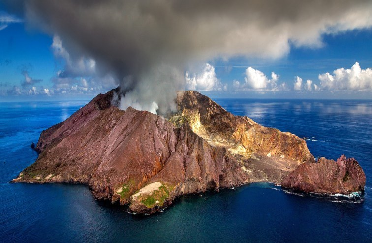

Compare the shapes. Explain how they formed. Then use your ideas to identify real volcanoes.
ObserveDescribeExplain

Whakaari / White Island · A volcano can extend far below sea level.
Your task · Read the four definition cards. In your own words, summarise each type and compare their shapes and how they form. Think about shape, erupted material and how it forms.
Composite cone
A large, usually steep-sided volcano built by repeated eruptions of lava and ash. Layers accumulate around a main vent. Its lava is often more viscous (less runny) than shield-volcano lava, so it usually travels a shorter distance before cooling.
Examples: Taranaki Maunga and Ruapehu.
Scoria cone
A relatively small, steep-sided volcanic hill made mainly from scoria: bubbly rock fragments thrown into the air during an eruption. The fragments cool and pile up around a vent, often leaving a bowl-shaped crater at the top. Scoria cones can also produce lava flows.
Examples: Maungakiekie / One Tree Hill and Maungarei / Mount Wellington.
Shield volcano
A broad volcano with gentle slopes, built mainly from repeated flows of runny, low-viscosity lava, usually basalt. The lava spreads over a large area before cooling and solidifying, gradually building a wide, low-profile mountain.
Examples: Mauna Loa; Rangitoto is a shield with scoria cones at its summit.
Caldera
A large volcanic depression formed when the ground collapses after substantial magma is removed from a magma chamber during an eruption. Some calderas later fill with water to form lakes. A caldera is a collapse structure, rather than a cone built up from erupted material.
Composite vs scoria: Both can have steep slopes. A composite cone is usually larger and built by repeated eruptions depositing lava and ash; a scoria cone is smaller and built mainly from ejected fragments.
Scoria vs shield: A scoria cone is a steep pile of fragments around a vent. A shield is broad and gently sloping because fluid lava spreads farther before cooling.
Caldera vs built-up volcanoes: A caldera is formed by ground collapse; composite cones, scoria cones and shields are mainly formed by material building up.